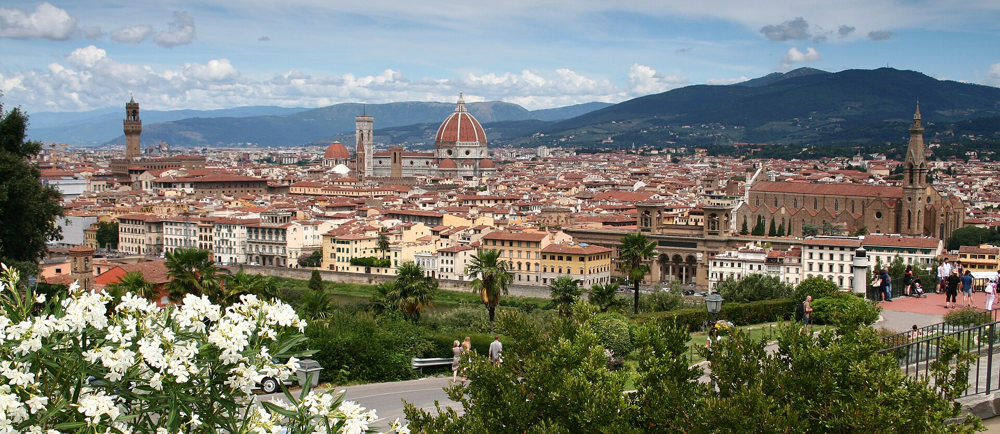

A school devoted, from its very beginning, to a single purpose — to educate true artists in the living traditions of the Renaissance.
The Academy has never changed its purpose — to educate true students of art.
From the very beginning, the basis of this education has been a harmonious, methodical system. This system has changed and improved over time, reflecting the new and growing needs of each age. The Academy gives versatile, deep knowledge that enables our students to develop their own artistic voice and to work in many directions, from classical to contemporary art.
«Our philosophy is simple — to give deep, versatile knowledge, so that every student may find a voice entirely their own.»The International Academy of Art · Florence
The International Art Academy stands on Piazza della Libertà, the northernmost point of the historic centre of Florence. The square was built in the 19th century during the works that produced the Viali di Circonvallazione around the city, and it hosts the Triumphal Arch of the Lorraine and, in winter, an ice rink for skating.
The Academy occupies Palazzo Cosimo Ridolfi — a building with a three-axis plan, raised by the Corbinelli at the beginning of the 15th century and later passed to the Ridolfi di Piazza in 1483. At the time of Cosimo I's census in 1551 it was home to Luigi di Piero Ridolfi; its traditional name remembers Senator Cosimo Ridolfi (1794–1865), agronomist, patriot and philanthropist. Its rusticated stone ground floor, great arched openings and graffito-decorated upper floors were listed in 1901 as a monumental building of national artistic heritage.

We work alongside cultural associations, artisans and museums across Florence and beyond.
Discover our disciplines and method, or begin your application today.